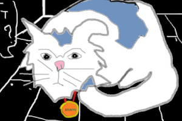

Morvan est le chat le plus intelligent du monde. Il a gagné un tournoi d'échec contre Alfredo Bouchard en 1996, le célèbre champion de surf Irlandais.
Ce chat est très bizarre, il a une langue fourchue et il sourit tout le temps.

Bibine aime prendre le temps de réfléchir. Mangera t-elle ? Mangera t-elle pas ? Personne ne sait car personne n'est à la maison pour lui ouvrir la boîte de thon.